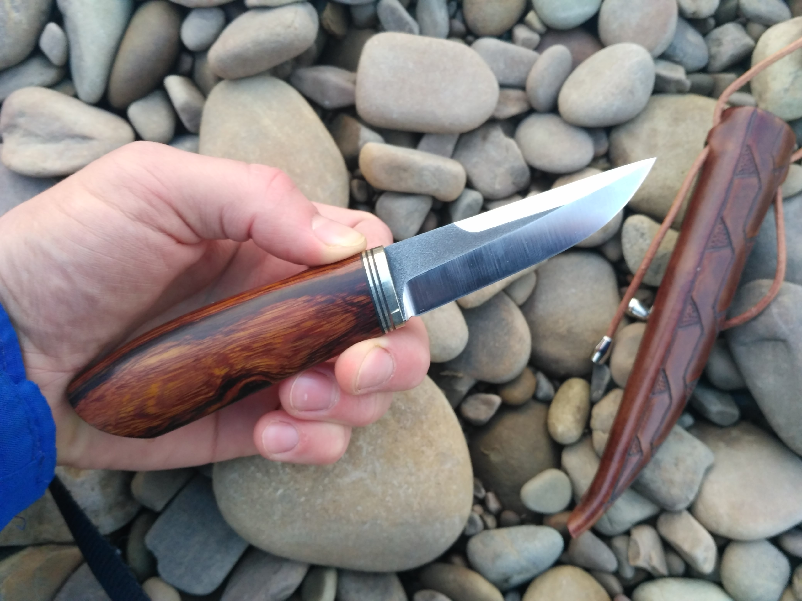

Dvalin's knives
This is a page about knifemaking.
Ножі – це важливий аксесуар, який є, без перебільшення, в кожному будинку. Купити сьогодні гарний і якісний ніж не становить особливої складності. Однак при бажанні можна легко зробити ніж в домашніх умовах своїми руками. Причому можна виконати будь-якої з них: столовий, мисливські, для метання, з ручкою з дерева, каменю і так далі.
Зміст
- Які вимоги пред’являють до ножа?
- Класифікація ножів
- >Як зробити ножа?
- >Як загартувати ніж?
- >Як зробити ручку?



Які вимоги пред’являють до ножа?
Ножі повинні відповідати ряду вимог, які необхідно враховувати, збираючись зробити ніж своїми руками. Так, наприклад, він обов’язково повинен бути гострим і зберігати таку свою властивість протягом тривалого часу навіть при активному використанні.
Особливу увагу слід приділяти такому процесу, як виготовлення рукоятки. Вона може бути будь – кам’яною, з дерева, пластмасовою – все неважливо. Головне, щоб вона зручно лежала в руці. Адже якщо ніж не буде комфортний для руки, працювати з ним буде неможливо – кисть стане втомлюватися, почнуть з’являтися мозолі на долонях.
Класифікація ножів.
Збираючись зробити ніж самостійно, варто розуміти, для яких цілей ви його будете використовувати. Виготовлення кожного з них має свої особливості та нюанси. Так, ножі поділяються на:
- Ті, що використовуються для приготування їжі: їх форма – видовжений трикутник. Між собою відрізняються довжиною леза і розмірами. Рукоятки виконані в єдиному стилі.
- Обідні варіанти: такі використовуються для приготування бутербродів, нарізання овочів, вирізання кісточок з різних плодів.
- Мисливські та туристичні: представляють собою універсальний варіант, за допомогою якого легко можна обробити м’ясо або рибу. Крім того, мисливські ножі дозволяють легко рубати гілки і навіть захищатися при нападі диких звірів.
- Мачете: холодна зброя, що використовується для прорубання проходу в лісі – воно більш потужний, ніж мисливські та туристичні
- Бойові: зброя, призначена для спортивних єдиноборств
- Окрема категорія для нанесення колючих ударів: кортик, кинджал, стилет і так далі.
More about tools